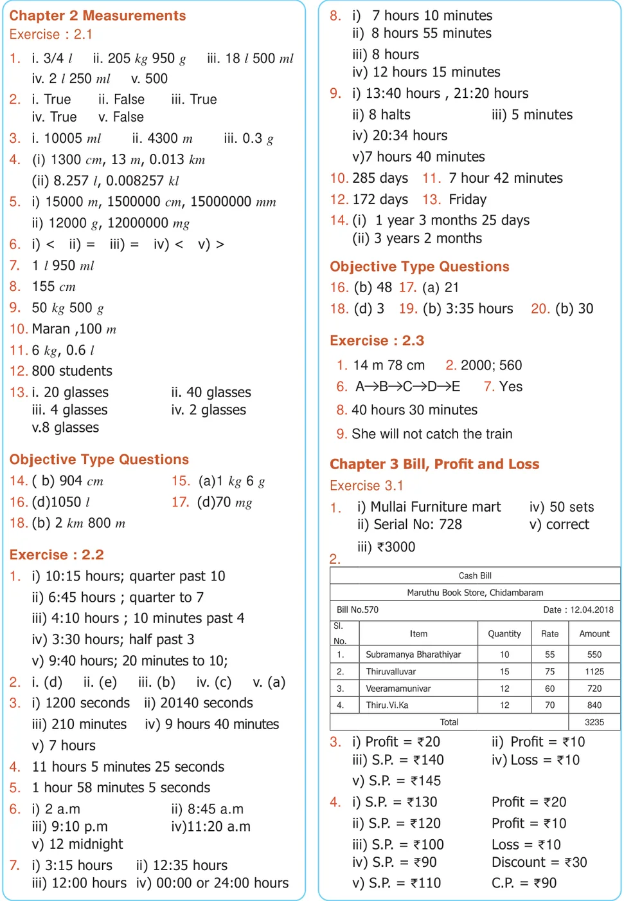
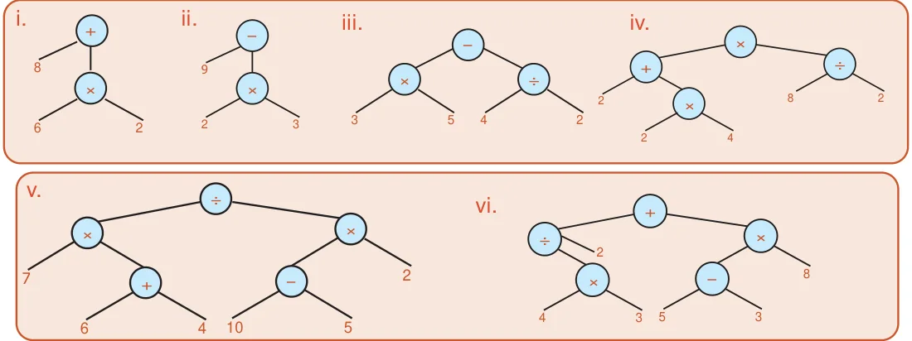
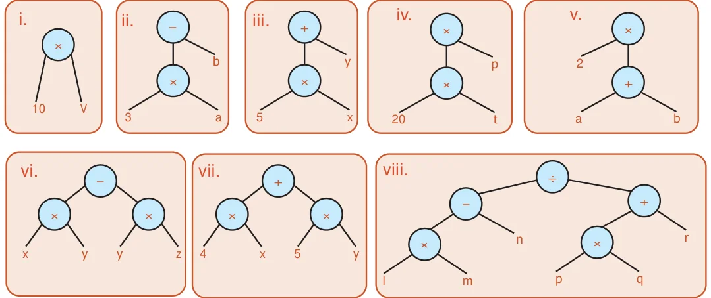

<!DOCTYPE html>
<html lang="en">
<head>
<meta charset="UTF-8">
<meta name="viewport" content="width=device-width,initial-scale=1">
<title>Answers — Appendix</title>
<meta name="description" content="Class 6 Mathematics · Term 2 · Appendix · Answers">
<link rel="icon" href="data:image/svg+xml,<svg xmlns='http://www.w3.org/2000/svg' viewBox='0 0 100 100'><text y='.9em' font-size='90'>📘</text></svg>">
<link rel="stylesheet" href="../../../assets/book.css">
<link rel="stylesheet" href="https://cdn.jsdelivr.net/npm/katex@0.16.11/dist/katex.min.css" crossorigin="anonymous">
</head>
<body>
<header class="topbar">
<div class="topbar-in">
  <div class="crumb">
    <span class="c1"><a href="../../../index.html">Library</a> · <a href="../../index.html">Class 6 Mathematics · Term 2</a></span>
    <span class="c2">Appendix · Answers</span>
  </div>
  <a class="tb-btn" data-nav="prev" href="../../90-appendix/00-front-matter/index.html" title="Front Matter">←</a>
  <details class="drawer"><summary class="tb-btn" title="Sections in this chapter">☰</summary>
<div class="drawer-panel"><div class="dh">Appendix</div><a href="../00-front-matter/index.html">Front Matter</a><a href="../answers/index.html" aria-current="page">Answers</a><a href="../mathematical-terms/index.html">Mathematical Terms</a></div></details>
  <a class="tb-btn" data-nav="next" href="../../90-appendix/mathematical-terms/index.html" title="Mathematical Terms">→</a>
  <button class="tb-btn" data-theme-toggle title="Toggle light / dark" aria-label="Toggle light or dark theme">◐</button>
</div>
<div class="progress"><span style="width:97.9%"></span></div>
</header>
<main class="wrap">
<div class="sec-head">
  <p class="eyebrow"><a href="../index.html">Appendix · Appendix</a></p>
  <h1>Answers</h1>
  <p class="sec-meta">3 figures</p>
</div>
<article class="prose">
<p>Chapter 1 Numbers 5. \(HCF \to 22\); \(LCM \to 18018\) Exercise 1.1 6. HCF=20 litres</p>
<ul class="qlist">
<li><span class="mk">1.</span><span class="lt">i) 12 ii) 31 iii) 3 iv) 2 v) 10 7. After 360 seconds (6 min), at 8.06 a.m</span></li>
<li><span class="mk">2.</span><span class="lt">i) False ii) False 8. 2 pairs possible</span></li>
<li><span class="mk">iii)</span><span class="lt">True iv) True v) True 9. 24</span></li>
<li><span class="mk">3.</span><span class="lt">smallest \(\to 11\); biggest \(\to 97\) Objective Type Questions</span></li>
<li><span class="mk">4.</span><span class="lt">smallest \(\to 100\); biggest \(\to 999 10\). c) 71, 81 11. d) 9936</span></li>
<li><span class="mk">5.</span><span class="lt">True. \(3 + 7 + 9 = 19\) is odd 12. b) 36 13. c) 80</span></li>
<li><span class="mk">6.</span><span class="lt">(17, 71),(37,73) &amp; (79,97)</span></li>
</ul>
<h3 class="callout-h" id="s-exercise-1-3">Exercise 1.3</h3>
<ul class="qlist">
<li><span class="mk">7.</span><span class="lt">8. False. 9 is odd number but not prime True. The composite number 4 has 3 factors namely 1, 2, and 4. 1. 4 \(= 2 + 2\); \(6 = 3 + 3\); \(8 = 3 + 5\); \(14 = 7 + 7\) (or) \(3 + 11\); \(10 = 3 + 7\) (or) \(5 + 5\); \(12 = 5 + 7\);</span></li>
<li><span class="mk">9.</span><span class="lt">6, 12, 18, 24, 30 (excluding February) \(16 = 5 + 11\) (or) \(3 + 13\)</span></li>
<li><span class="mk">10.</span><span class="lt">19 2. Yes, because it has only two factors.</span></li>
<li><span class="mk">11.</span><span class="lt">a) \(60 = 2 x 2 x 3 x 5 3\). For \(n = 2\), 3, 4, 6 and 7</span></li>
<li><span class="mk">c)</span><span class="lt">\(144d) 198b) 128e) 420 = = = = 222 2 x x x x 3222 x x x x 32 23 x x x x 21125 x x x 23 7 x x 32 x 2 4.5\). a) False, 3 is a factor of 9 b) True, 12 is a multiple of 6 i) 8 ii) 0 iii) 9 iv) 1 v) 8</span></li>
<li><span class="mk">f)</span><span class="lt">\(999 = 3 x 3 x 3 x 37 6\). False. 12 is divisible by both 4 and 6 but</span></li>
<li><span class="mk">12.</span><span class="lt">(11, 13) or (13, 11) not by 24</span></li>
<li><span class="mk">7.</span><span class="lt">True. 17+19=36 is divisible by 4</span></li>
</ul>
<p>Objective Type Questions 8. 40 cm</p>
<ul class="qlist">
<li><span class="mk">13.</span><span class="lt">b) 2 14. c) 2 15. b) 92 16. c) 40 Challenge problems</span></li>
<li><span class="mk">17.</span><span class="lt">a) 80 18. d) impossible 19. a) 2 9. 2, 37, 41</span></li>
<li><span class="mk">20.</span><span class="lt">d) all of these 10. 11, 13, 17, 19; The sum 60 is divisible by 1,</span></li>
</ul>
<p>Exercise 1.2 2, 3, 4, 5 and 6 but not divisible by 7, 8 and 9</p>
<ul class="qlist">
<li><span class="mk">1.</span><span class="lt">i) 15 ii) 2 11. 2520</span></li>
<li><span class="mk">iii)</span><span class="lt">3 iv) 156 v) 3 12. Yes. \(2 x 3 x 4=24\) is divisible by 6.</span></li>
<li><span class="mk">2.</span><span class="lt">i) False ii) True 13. Once in 30 days, \(31^{st}\) October</span></li>
</ul>
<p>iii)True iv) False v)True 14. The lifts will stop at floors</p>
<ul class="qlist">
<li><span class="mk">3.</span><span class="lt">i) 6 ii) 17 15, 30, 45, 60, 75, 90 and 105</span></li>
<li><span class="mk">iii)</span><span class="lt">1 iv) 12</span></li>
<li><span class="mk">v)</span><span class="lt">9 vi) 5 15. (15, 20)</span></li>
<li><span class="mk">4.</span><span class="lt">i) 18 ii) 24 16. Yes. Since it is divisible by both 8 and 11</span></li>
<li><span class="mk">iii)</span><span class="lt">30 iv) 42 and hence by 88</span></li>
<li><span class="mk">v)</span><span class="lt">120 vi)75 17. After 60 minutes, at 8 a.m</span></li>
</ul>
<aside class="sidenote"><p>Answers</p></aside>
<figure class="fig table-fig wide"></figure>
<ul class="qlist">
<li><span class="mk">5.</span><span class="lt">Profit = `15 10. Discount = `295 iv) Yes, Isosceles triangle</span></li>
<li><span class="mk">v)</span><span class="lt">Yes, Equilateral triangle</span></li>
<li><span class="mk">6.</span><span class="lt">Loss = `40 11. M.P. = `1850 vi) No, The triangle cannot be formed</span></li>
<li><span class="mk">7.</span><span class="lt">No Profit / Loss 12. Discount = `25 8. i) Yes, Acute angled triangle</span></li>
<li><span class="mk">8.</span><span class="lt">S.P. = `8,75,000 13. S.P = `3 ii) Yes, Right angled triangle</span></li>
<li><span class="mk">9.</span><span class="lt">C.P. = `25,000 14. Loss = `5585 iii) No, The triangle cannot be formed</span></li>
<li><span class="mk">iv)</span><span class="lt">No, The triangle cannot be formed</span></li>
</ul>
<p>Objective Type Questions v) Yes, Acute angled triangle</p>
<ul class="qlist">
<li><span class="mk">15.</span><span class="lt">(a) M.P. 17. (a) C.P = S.P vi) Yes, Obtuse angled triangle</span></li>
<li><span class="mk">16.</span><span class="lt">(b) C.P 18. (b) S.P 9. i) \(40 ^{\circ}\) ii) \(70 ^{\circ}\) iii) \(60 ^{\circ}\)</span></li>
</ul>
<p>Exercise 3.2 iv) \(40 ^{\circ}\) v) \(30 ^{\circ}\) vi) \(40 ^{\circ}\)</p>
<ul class="qlist">
<li><span class="mk">10.</span><span class="lt">Equilateral Triangle</span></li>
<li><span class="mk">1.</span><span class="lt">Gain = `15 5. Gain = `32</span></li>
<li><span class="mk">2.</span><span class="lt">Loss = `50 6. M.P. = `29 11. ii) Acute angled triangle, Isosceles triangle</span></li>
<li><span class="mk">iii)</span><span class="lt">Right angled triangle, Isosceles triangle</span></li>
<li><span class="mk">3.</span><span class="lt">Profit = `200 7. Profit =`960 iv) Acute angled triangle, Scalene triangle</span></li>
<li><span class="mk">4.</span><span class="lt">Profit =`1,00,000 8. Profit = `3000 v) Acute angled triangle, Scalene triangle</span></li>
</ul>
<p>Chapter 4 Geometry vi) Right angled triangle, Scalene triangle Exercise 4.1 vii) Obtuse angled triangle, Scalene triangle</p>
<ul class="qlist">
<li><span class="mk">1.</span><span class="lt">a) two b) scalene triangle c) two viii) Obtuse angled triangle, Isosceles triangle</span></li>
<li><span class="mk">d)</span><span class="lt">\(180 ^{\circ}\) e) isosceles right angled triangle</span></li>
<li><span class="mk">2.</span><span class="lt">i) Scalene triangle Objective Type Questions</span></li>
<li><span class="mk">ii)</span><span class="lt">Right angled triangle 12. b 13. d 14. a 15. d 16. c</span></li>
<li><span class="mk">iii)</span><span class="lt">Obtuse angled triangleiv) Isosceles triangle Exercise 4.3</span></li>
<li><span class="mk">v)</span><span class="lt">Equilateral triangle 1. \(90 ^{\circ}\) , \(45 ^{\circ}\) , \(45 ^{\circ} 2\). c</span></li>
<li><span class="mk">3.</span><span class="lt">a) AB BC, CA, 3. c 4. \(28 ^{\circ}\) , \(28 ^{\circ}\)</span></li>
<li><span class="mk">b)</span><span class="lt">\(\angle ABC\), BCA, CAB or A, B, \(C \angle \angle \angle \angle \angle 5\). Both are Isosceles Right angled triangles</span></li>
<li><span class="mk">c)</span><span class="lt">A, B, C 6. Yes 7. No, A triangle cannot have more</span></li>
<li><span class="mk">4.</span><span class="lt">i) Equilateral triangle ii) Scalene triangle than one right angle</span></li>
<li><span class="mk">iii)</span><span class="lt">Isosceles triangle iv) Scalene triangle 8. “a” is true, because an isosceles triangle</span></li>
<li><span class="mk">5.</span><span class="lt">i) Acute angled triangle need not have three equal sides</span></li>
<li><span class="mk">ii)</span><span class="lt">Right angled triangle 9. \(70 ^{\circ} ,40 ^{\circ}\) or \(55 ^{\circ} ,55 ^{\circ} 10\). c</span></li>
<li><span class="mk">iii)</span><span class="lt">Obtuse angled triangle 11. a) \(\triangle ABC\) b) \(\triangle ABC\) , \(\triangle AEF\)</span></li>
<li><span class="mk">iv)</span><span class="lt">Acute angled triangle c)  \(\triangle AEB\), \(\triangle AED\), \(\triangle ADF\), \(\triangle AFC\), \(\triangle ABD\),</span></li>
<li><span class="mk">6.</span><span class="lt">i) a) Isosceles Acute angled triangle \(\triangle ADC\), \(\triangle ABF\), \(\triangle AEC\)</span></li>
<li><span class="mk">ii)</span><span class="lt">a) Scalene Right -angled triangle d) \(\triangle ABC\), \(\triangle AEF\), \(\triangle ABF\), \(\triangle AEC\)</span></li>
<li><span class="mk">iii)</span><span class="lt">a) Isosceles Obtuse angled triangle e) \(\triangle AEB\), \(\triangle AFC\)</span></li>
<li><span class="mk">iv)</span><span class="lt">a) Isosceles Right -angled triangle f) \(\triangle ADB\), \(\triangle ADC\), \(\triangle ADE\), \(\triangle ADF\)</span></li>
<li><span class="mk">v)</span><span class="lt">a) Equilateral Acute angled triangle</span></li>
<li><span class="mk">vi)</span><span class="lt">a) Scalene Obtuse angled triangle 12. (i(ii) between 3 and 11) between 0 and 16 (iv) between 4 and 24(iii) between 4 and 11</span></li>
<li><span class="mk">7.</span><span class="lt">i) Yes, Scalene triangle</span></li>
<li><span class="mk">ii)</span><span class="lt">Yes, Scalene triangle iii) No, The triangle cannot be formed 13. i. iii. Obtuse angleAlways acute angles ii. Acute angle</span></li>
</ul>
<aside class="sidenote"><p>Answers</p></aside>
<p>Chapter 5 Information Processing</p>
<h4 class="callout-h" id="s-exercise-5-1">Exercise 5.1</h4>
<p>1)</p>
<figure class="fig wide"></figure>
<ul class="qlist">
<li><span class="mk">2)</span><span class="lt">i. \(9 \times 8\) ii. \((7+6) - 5\) iii. \((8+2) - (6+1)\) iv. \((5 \times 6) - (10 \div 2)\)</span></li>
</ul>
<p>3)</p>
<figure class="fig wide"></figure>
<ul class="qlist">
<li><span class="mk">4)</span><span class="lt">Algebraic expression</span></li>
<li><span class="mk">(i)</span><span class="lt">p+q (ii) \(l - m\) (iii) ab \(- c\) (iv) \((a+b) - (c+d)\) (v) \((8 \div a)+[(b \div 4) + 3] 4)\)</span></li>
</ul>
<p>Exercise 5.2 (i)</p>
<ul class="qlist">
<li><span class="mk">1)</span><span class="lt">i. \(\times\) ii. \(\div\) iii. \(- 1210 2100 2550 31603310\)</span></li>
</ul>
<div class="mathblock"><p>\(15 65 + +\)</p></div>
<p>\(\div + - 8 5 9 2 9 3 9 3 755250 534500\)</p>
<ul class="qlist">
<li><span class="mk">2)</span><span class="lt">i. ii. \(6)(3 \times 8) - 5=19 7)\) (iii)</span></li>
</ul>
<p>\(+ - - \times\)</p>
<p>\(8 39 - 5 1600 20\)</p>
<div class="mathblock"><p>\(\div \times 5 +\)</p><p>\(6 2 6 5 \times 3 4\) (iv) \(\div\)</p></div>
<ul class="qlist">
<li><span class="mk">3)</span><span class="lt">Not equal 90000 30</span></li>
</ul>
</article>
<nav class="pager"><a class="" data-nav="prev" href="../../90-appendix/00-front-matter/index.html"><span class="dir">← Previous</span><span class="t">Front Matter</span><span class="ch">Appendix</span></a><a class="nx" data-nav="next" href="../../90-appendix/mathematical-terms/index.html"><span class="dir">Next →</span><span class="t">Mathematical Terms</span><span class="ch">Appendix</span></a></nav>
</main><footer class="site">Generated from the source textbook PDFs · text, figures and exercises belong to their respective publishers.</footer><script defer src="https://cdn.jsdelivr.net/npm/katex@0.16.11/dist/katex.min.js" crossorigin="anonymous"></script>
<script defer src="https://cdn.jsdelivr.net/npm/katex@0.16.11/dist/contrib/auto-render.min.js" crossorigin="anonymous"
  onload="renderMathInElement(document.body,{delimiters:[
    {left:'\\(',right:'\\)',display:false},
    {left:'$$',right:'$$',display:true},
    {left:'\\[',right:'\\]',display:true}],throwOnError:false,ignoredTags:['script','noscript','style','textarea','pre','code']})"></script>
<script src="../../../assets/book.js"></script>
<script defer src="../../../../assets/search.js"></script>
</body>
</html>
